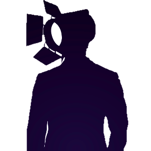

Entourloop :::: Puredata
4 channels DIY looper, with lot of custom effect
Menu
Tempo_fixed
[[bouton_delete]]
Loop main
Global Bar
Channel 1
Recording
Loop Recorded
Loop Playing
[[ bouton_rec ]]
[[ bouton_play ]]
Channel 2
[[ waiting_msg ]]
Recording
Loop Recorded
Loop Playing
[[ bouton_rec ]]
[[ bouton_play ]]
[[ bouton_del ]]
Channel 3
Channel 4